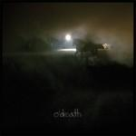
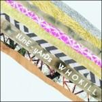
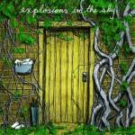

Music Reviews
-
Glasvegas Euphoric /// Heartbreak \\\
Born in Scotland, bred on the Santa Monica Beach, this is the second album by Glasvegas and no, its not shit.
Joe Iliff reviews... -
The Antlers Burst Apart
The Antlers try to follow the wonderful 2009's Hospice with an album of slightly more comfortable indie rock.
Andrew Baer is okay with this... -

O'Death Outside
The New York based act have always sounded like a band out of time. But will the particularly difficult gestation of their latest album of macabre folk make them seem any more authentic?
Mark Davison joins them in the gloom... -

Fleet Foxes Helplessness Blues
A step above their debut on all accounts, the Fleet Foxes are one step closer to finding what they're looking for.
Juan Edgardo Rodríguez basks in the warm sun... -

tUnE-yArDs W h o k i l l
Merril Garbus returns as tUnE-yArDs, giving us a surprisingly confident, incredibly improved album.
Andrew Baer is pleasantly surprised... -

Explosions In The Sky Take Care, Take Care, Take Care
Explosions In The Sky bring nothing new to the table with Take Care, Take Care, Take Care - but kick back and enjoy the ride and you'll still find plenty to enjoy.
Joel Stanier reviews... -

Metronomy The English Riviera
The often overlooked electronica-influenced band return with a new line-up and a much hyped new album.
Mark Davison remains underwhelmed... -
Kurt Vile Smoke Ring For My Halo
Having written Kurt Vile off as a bedroom bore, David Coleman is forced to reconsider his position.
Click here to read his review... -

Times New Viking Dancer Equired
The former art students rebel against their own formality with a cleaner production, but the song remains the same.
Juan Edgardo Rodríguez feels downright cheated... -

Meat Puppets Lollipop
If Edward Lear had moved to the Californian desert and taken peyote, then he might have made music like this.
Sam Redlark listens with his third eye...